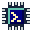
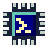

ESP32.SH / IDENTITY STUDY 01
方案 A：芯片终端

esp32.sh
芯片轮廓 + >_ 终端提示符。用深蓝、青绿与米黄色呼应网站，保留一点旧式应用图标的立体边缘。
LIGHT BACKGROUND / 原尺寸
16px
32px

48pxDARK BACKGROUND / 原尺寸
16px
32px
48px
BROWSER TAB / 标签页示意
16px 小图版
放大 6 倍
放大 6 倍
ESP32.SH / IDENTITY STUDY 01

芯片轮廓 + >_ 终端提示符。用深蓝、青绿与米黄色呼应网站，保留一点旧式应用图标的立体边缘。
LIGHT BACKGROUND / 原尺寸

48pxDARK BACKGROUND / 原尺寸
BROWSER TAB / 标签页示意